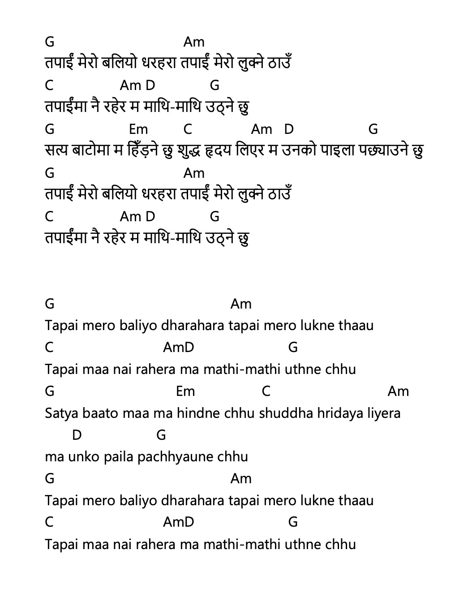

तपाईं मेरो बलियो धरहरा – Tapai Mero Baliyo Dharahara

नेपाली Lyrics (Copyable)
तपाईं मेरो बलियो धरहरा तपाईं मेरो लुक्ने ठाउँ
तपाईंमा नै रहेर म माथि-माथि उठ्ने छु
सत्य बाटोमा म हिँड़ने छु शुद्ध हृदय लिएर म उनको पाइला पछ्याउने छु
तपाईं मेरो बलियो धरहरा तपाईं मेरो लुक्ने ठाउँ
तपाईंमा नै रहेर म माथि-माथि उठ्ने छु